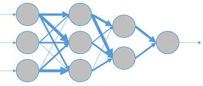

Píxeles Pensantes: Introducción a la IA

Editorial Fernández
Noviembre,2024
Directiva Editorial
La Editorial de Libros Fernández, líder en su campo, se enorgullece de ofrecer una amplia selección de obras literarias de calidad que deleitan y enriquecen a sus lectores.
Autor
Mi nombre es Juan Fernández, estudiante de ingeniería en sistemas de la Universidad Bicentenaria de Aragua. Redactó esta revista con el propósito de transmitir los enfoques teóricos de las IAs.
Indice
- Introducción Pg 5
- ¿Qué es la Inteligencia Artificial? Pg 6
- Cómo funciona la IA: Los conceptos básicos Pg 7
- Aplicaciones de la IA en nuestra vida Pg 8
- Conclusión Pg 9
- Créditos Pg 10
5
Introducción
¿Te imaginas un mundo donde las máquinas aprenden y toman decisiones por sí mismas? La inteligencia artificial ya no es ciencia ficción. Está transformando nuestra vida cotidiana, desde los asistentes virtuales en nuestros teléfonos hasta los automóviles autónomos. En esta revista, te invitamos a explorar los conceptos básicos de la inteligencia artificial, desde cómo funcionan los algoritmos hasta las aplicaciones más sorprendentes de esta tecnología.

6
¿Qué es la inteligencia artificial
La inteligencia artificial (IA) es la simulación de procesos de inteligencia humana por parte de máquinas, especialmente sistemas informáticos. Estos sistemas están diseñados para realizar tareas que normalmente requieren inteligencia humana, como el aprendizaje, el razonamiento, la resolución de problemas y la percepción.
Un ejemplo sencillo de IA que utilizamos a diario son los asistentes virtuales como Siri o Alexa. Estos sistemas pueden responder a preguntas, realizar tareas y aprender de nuestras interacciones.
7
Cómo funciona la IA: Los conceptos básicos
El aprendizaje automático es una rama de la inteligencia artificial que permite a las computadoras aprender a partir de datos, sin ser programadas explícitamente para cada tarea.
Las redes neuronales son modelos computacionales inspirados en el funcionamiento del cerebro humano. Están formadas por unidades interconectadas llamadas neuronas artificiales que procesan información de manera similar a como lo hacen las neuronas biológicas
Los algoritmos son un conjunto de instrucciones paso a paso que le indican a la máquina cómo realizar una tarea. En el caso de la IA, los algoritmos le dicen a la máquina cómo procesar los datos y cómo aprender de ellos.
8
Aplicaciones de la IA en nuestra vida
En el hogar: Los asistentes virtuales como Siri y Alexa utilizan IA para entender nuestras órdenes y realizar tareas.
En la salud: La IA se utiliza para diagnosticar enfermedades a partir de imágenes médicas, desarrollar nuevos medicamentos y personalizar tratamientos.
En el transporte: Los coches autónomos utilizan IA para navegar por las calles y tomar decisiones en tiempo real.

En el entretenimiento: Los servicios de streaming utilizan IA para recomendar películas y series de televisión personalizadas.
9
Conclusión
La Inteligencia Artificial (IA) está transformando rápidamente el mundo, permitiendo a las máquinas aprender y realizar tareas complejas de manera autónoma.
Sus aplicaciones son vastas y abarcan desde la medicina hasta la industria, mejorando la eficiencia y precisión en muchos procesos. Uno de los mayores beneficios de la IA es su capacidad para analizar grandes volúmenes de datos y encontrar patrones que los humanos podrían pasar por alto, lo que a su vez impulsa la innovación y la toma de decisiones más informadas.
Píxeles Pensantes es una publicación que ofrece una introducción clara y concisa al fascinante mundo de la Inteligencia Artificial (IA). La revista explora los fundamentos de esta tecnología, desde sus conceptos básicos hasta sus aplicaciones más avanzadas.
Si buscas una guía introductoria a la IA, Píxeles Pensantes es una excelente opción para adentrarte en este campo en constante evolución.

Créditos
- Director Editorial: Editorial Fernandez
- Diseño: Juan Fernández
- Redacción: Juan Fernández